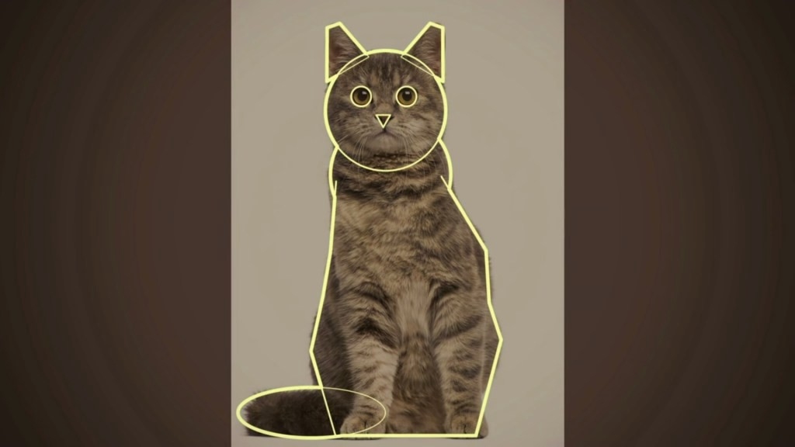
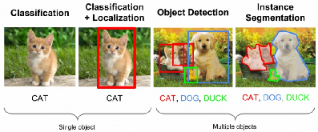
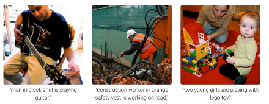
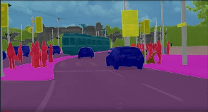
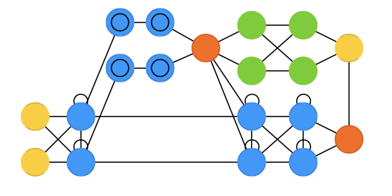
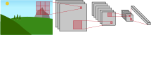
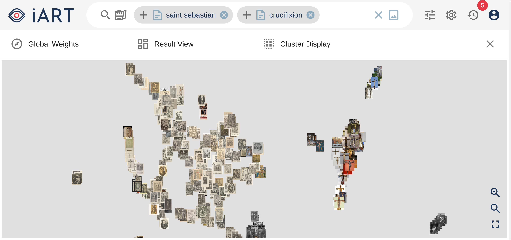

Datenadressierung und Künstliche Intelligenz
Matthias Springstein
TIB - Leibniz Information Centre for Science and Technology
Übersicht


- Warum Deep Learning?
- Was können neuronale Netze?
- Wie werden neuronale Netze trainiert?
- Wie können wir mit neuronalen Netzen suchen?
- Welchen Service gibt es?
- iART - Kunsthistorische Bildsuchmaschine
Warum Deep Learning? - Bildklassifikation
- "Hand crafted" Merkmale, die mit festen Verfahren berechnet werden
- Farbverteilungen
- Kantenmuster
- Form
- Trainierbare Klassifikatoren zur Unterscheidung zwischen Klassen in diesem Merkmalsraum
Warum Deep Learning?
Warum Deep Learning?

Warum Deep Learning?
Warum Deep Learning? - Neuronale Netzwerke
- Merkmalsextraktion und Klassifizierung erfolgen in einem Schritt
- Die Merkmalsextraktion wird trainiert und ist nicht von Menschen vordefiniert
Was können neuronale Netze?



Wie werden neuronale Netze trainiert?
Was brauche ich für mein eigenes neuronales Netz?
- Daten: Mehrere Beispieleingaben und meist auch zugehörige Anmerkungen
- Modell: Ein geeignetes Modell, das für Input und Output geeignet ist
- Zielfunktion: Gibt an wie gut das Modell bereits funktioniert
- Optimierer: Eine Funktion, die angibt, wie sich das Modell verändern soll
Warum erst in den letzten Jahren?
- Entstehung von immer größeren Datenmengen, die sich für das Training eignen
- Effizientere Methoden
- Mehr Ressourcen für die Datenverarbeitung
Wie werden neuronale Netze trainiert?
Wie werden neuronale Netze trainiert?

Recurrent neural networks (RNN)

Convolutional neural networks (CNN)

Deconvolutional networks (DN)

Attention networks (AN)
Wie werden neuronale Netze trainiert?

Wie werden neuronale Netze trainiert?

Wie werden neuronale Netze trainiert?
Wie werden neuronale Netze trainiert?

Wie können wir mit neuronalen Netzen suchen?
- Die Klassifizierung dient lediglich der Vorhersage des konkreten Objekts oder der Szene
- Das Ergebnis der Merkmalsextraktion kann auch zum Vergleich von Bildern verwendet werden
Wie können wir mit neuronalen Netzen suchen?
Wie können wir mit neuronalen Netzen suchen?
Welchen Service gibt es? - Vision API
- https://cloud.google.com/vision
- Schnittstellen für verschiedene Bildanalyseverfahren:
- Objekterkennung
- Bildklassifikation
- OCR
Welchen Service gibt es? - Vision API
Welchen Service gibt es? - Clarifai
- https://www.clarifai.com/
- Schnittstellen für verschiedene Bildanalyseverfahren:
- Personenerkennung
- Objekterkennung
- Bildklassifikation
- Generierung von Bild Embeddings
Welchen Service gibt es? - Clarifai
iART - Kunsthistorische Bildsuchmaschine
